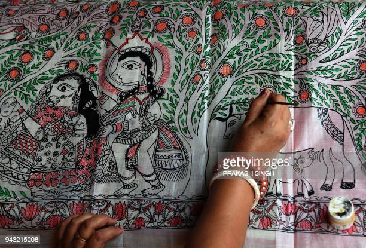
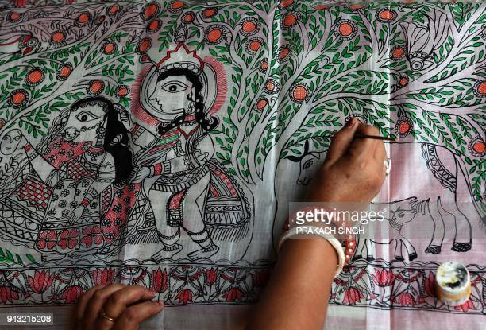

Madhubani art (also Mithila art) is a style of painting practiced in
the Mithila region of India and Nepal. It is named
after the Madhubani
district of Bihar, India, which is where it originated. Artists create
these paintings using a variety
of mediums, including their own fingers, or twigs, brushes, nib-pens, and matchstick.
The paint is created using
natural dyes and pigments.
The paintings are characterised by their eye-catching geometrical patterns.
There is
ritual content for particular occasions, such as birth or marriage, and festivals, such as Holi, Surya Shasti,
Kali Puja,
Upanayana, and Durga Puja.
Madhubani painting (or Mithila painting) was traditionally created by the women of various communities in the Mithila
region of the Indian subcontinent. It originated from Madhubani district of the Mithila region of Bihar.
Madhubani is
also a major export center of these paintings.
[1] This painting as a form of wall art was practiced widely throughout
the region; the more recent development of painting on
paper and canvas mainly originated among the villages
around Madhubani, and it is these latter developments that
led to the term "Madhubani art" being used alongside
"Mithila Painting."[2]
The paintings were traditionally done on freshly plastered mud walls and floors of huts, but now they are also done
on cloth,
handmade paper and canvas.[3] Madhubani paintings are made from the paste of powdered rice.
Madhubani painting has remained confined to a compact geographical area and the skills have been passed on through centuries,
the content and the
style have largely remained the same. Thus, Madhubani painting has received GI (Geographical Indication) status.
Madhubani paintings use two
-dimensional imagery, and the colors used are derived from plants.
Ochre, Lampblack and Red are used for reddish-brown and black, respectively.
[citation needed]
Mithila paintings mostly depict people and their association with nature and scenes and deities from the ancient epics.
Natural objects like the sun, the
moon, and religious plants like tulsi are also widely painted,
along with scenes from the royal court and social events like weddings. In this paintings
generally, no space is left empty;
the gaps are filled by paintings of flowers, animals, birds, and even geometric designs.
[citation needed] Traditionally, painting
was one of the skills that was passed down from generation to generation
in the families of the Mithila Region, mainly by women .
[4] It is still practiced
and kept alive in institutions spread across the Mithila region.
Asha Jha of Madhubanipaints in Darbhanga,[5] Vaidehi in Madhubani, Benipatti in Madhubani
district and Gram Vikas Parishad
in Ranti are some of the major centres of Madhubani painting which have kept this ancient art form alive
Mithila art has five distinctive styles:
1.Bharni
2.Katchni
3.Tantrik
4.Godna
5.Kohbar
In the 1960s Bharni, and Tantrik styles were mainly done by Brahman women in India and Nepal.
Their themes
were mainly religious and they depicted Gods and Goddesses paintings.
People of other castes included aspects
of their daily life and symbols, the story of Raja Shailesh (guard of the village)
and much more, in their paintings. Nowadays Madhubani art has become a
globalised art form, so there is no difference in the
work on the basis of the caste system. They work in all five styles. Mithila art has received worldwide
attention.[6][7]
The Madhubani painting tradition played a key role in the conservation efforts in India in 2012,
where there was frequent deforestation in the state of Bihar.
Gram Vikas Parishad, an NGO, started the initiative as an attempt to protect local trees that were being cut down in the
name of expanding roads and
development. The main reason behind this was that the trees were traditionally
adorned with forms of gods and other religious and spiritual images such
as those of Radha-Krishna, Rama-Sita,
scenes from Ramayana and Mahabharata and other mythologies.[citation needed]
Madhubani painting received official recognition in 1969 when Sita Devi received the State award by Government of Bihar.
Mamta Devi from the village
Jitwarpur has also got National Award. Jagdamba Devi from Bhajparaul,
Madhubani was given Padma Shri in 1975 and the National Award to Sita Devi of
Jitwarpur village near Madhubani.
[8][9] Jagdamba Devi's foster son Satya Narayan Lal Karn and his wife Moti Karn are also well-regarded Mithila artists,
and they won the National Award jointly in 2003. Sita Devi received the Padma Shri in 1981.
Sita Devi was also awarded by Bihar Ratna in 1984 and Shilp
Guru in 2006.
In 1984 Ganga Devi was awarded by Padma Shri.[10][11] Mahasundari Devi received the Padma Shri in 2011.
Baua Devi, Yamuna Devi, Shanti Devi,
Chano Devi, Bindeshwari Devi, Chandrakala Devi, Shashi kala Devi, Leela Devi,
Godavari Dutta, Asha Jha and Bharti Dayal were also given the National
award.[12][13][14] Chandrabhushan (Rasidpur), Ambika Devi
(Rasidpur), Manisha Jha were also given the National award.[citation needed]
In 2020, Madhubani
artist Dulari Devi won the Padma Shri for contributions to art.[15]
Kossak, Steven (1997). Indian court painting, 16th-19th century.. New York: The Metropolitan Museum of Art.
ISBN 978-0-87099-783-9. (see index: p. 148–152)
Old Traditional art by rural women, from Madhubani art gallery.